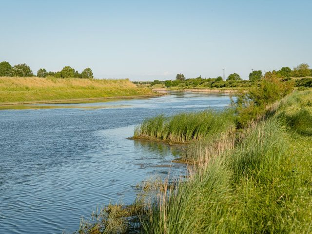
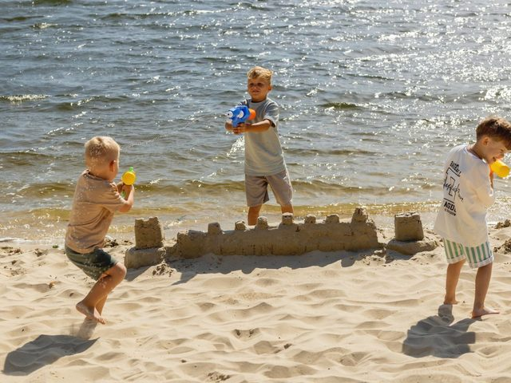
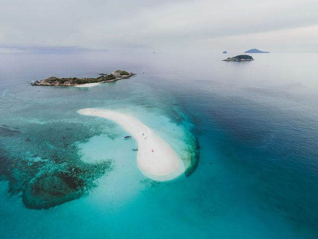
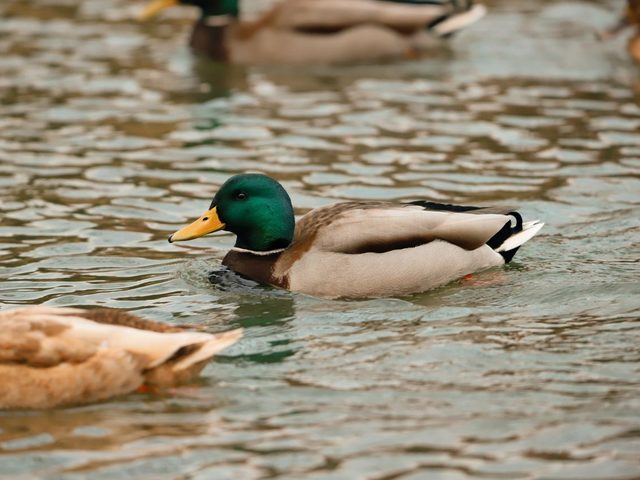
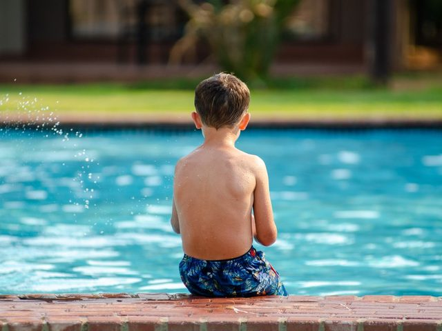
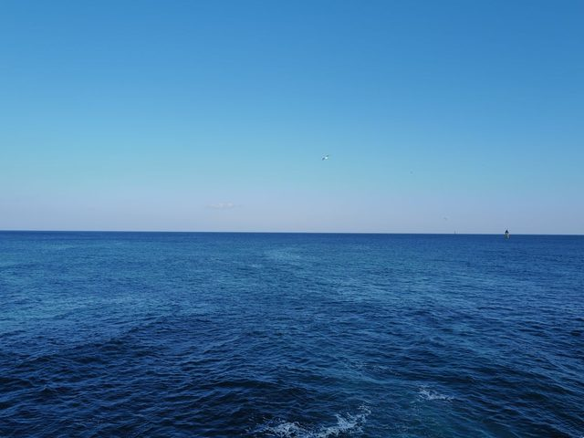
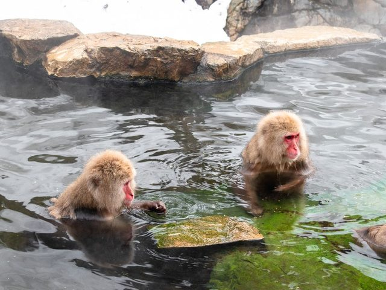

VOCABULARY · 主題 2000 字 UNIT 25
Geographical terms．地理名詞
山、河、湖、海、島……描述地形的 12 個字。有些字前面單元學過別的意思：bank 也是「河岸」、spring 也是「泉水」。
共 12 個單字．點 🔊 聽發音

1arean.
地區；面積；範圍
This area is famous for its tea.這個地區以茶聞名。

2bankn.
河岸；銀行
river bank 河岸
We had a picnic on the bank of the river.我們在河岸邊野餐。

3beachn.
海灘
複數 beaches
The kids built a sandcastle on the beach.孩子們在海灘上堆沙堡。

4hilln.
小山；丘陵
on the top of the hill 在山頂上
Our school is at the foot of a hill.我們學校在小山的山腳下。

5islandn.
島
s 不發音
Taiwan is a beautiful island.臺灣是個美麗的島嶼。

6laken.
湖
Sun Moon Lake 日月潭
We went boating on Sun Moon Lake.我們去日月潭划船。

7mountainn.
山；山岳
縮寫 Mt.；Mt. Jade 玉山
Mt. Jade is the highest mountain in Taiwan.玉山是臺灣最高的山。

8pondn.
池塘
比 lake 小
There are some fish in the pond.池塘裡有一些魚。

9pooln.
水池；游泳池
swimming pool 游泳池
The kids are swimming in the pool.孩子們在游泳池游泳。

10rivern.
河
the Tamsui River 淡水河
A long river runs through the city.一條長長的河流經這座城市。

11sean.
海
by the sea 在海邊
We swam in the sea last summer.去年夏天我們在海裡游泳。

12springn./v.
泉水；春天；彈簧；跳躍
hot spring 溫泉；三態 spring／sprang／sprung
Grandpa likes to take a hot spring bath in winter.爺爺冬天喜歡泡溫泉。
FOCUS
比大小：哪個大？
| 小 | 大 |
|---|---|
| hill 小山 | mountain 山 |
| pond 池塘 | lake 湖 |
| river 河 | sea 海 → ocean 洋 |
| island 島 | （大陸 mainland） |
山、河、湖的名字常加在前面：Mt. Jade（玉山）、the Tamsui River（淡水河）、Sun Moon Lake（日月潭）。
FOCUS
臺灣的地理名稱
| 英文 | 中文 |
|---|---|
| Mt. Jade | 玉山 |
| Sun Moon Lake | 日月潭 |
| the Tamsui River | 淡水河 |
| Kenting Beach | 墾丁海灘 |
| Green Island | 綠島 |
| Wulai Hot Spring | 烏來溫泉 |
河、海前面通常加 the：the Tamsui River、the Pacific Ocean。
FOCUS
介系詞：on、in、by
| 說法 | 意思 | 例句 |
|---|---|---|
| on the beach | 在海灘上 | We played on the beach. |
| in the sea / in the river / in the lake | 在海裡、河裡、湖裡（水中） | Fish live in the river. |
| on the lake / on the river | 在湖面上、河面上 | A boat is on the lake. |
| by the sea / by the river | 在海邊、河邊 | They live by the sea. |
| on the top of the hill | 在山頂上 | There is a house on the top of the hill. |
在島上用 on：on the island、on Green Island。